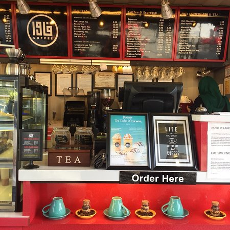
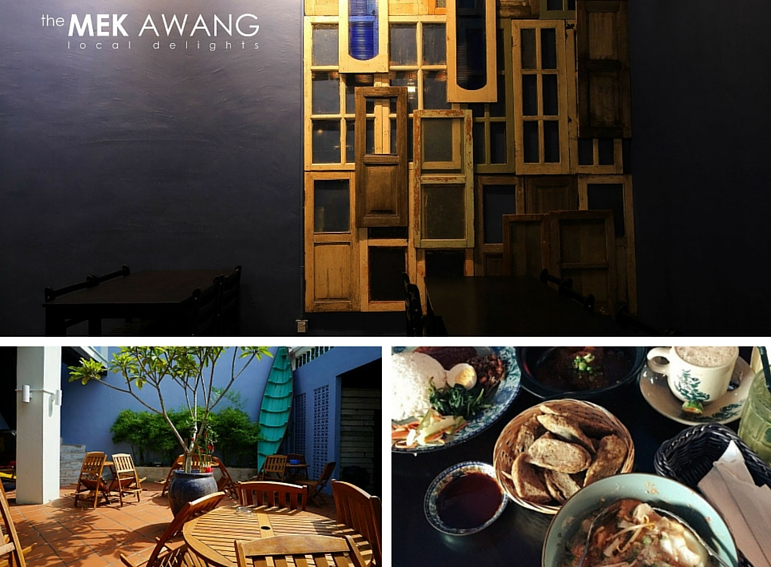
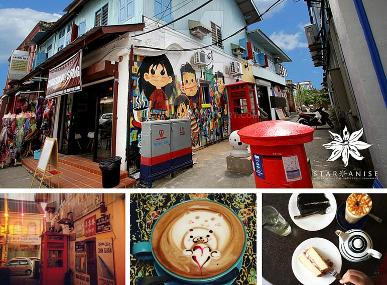
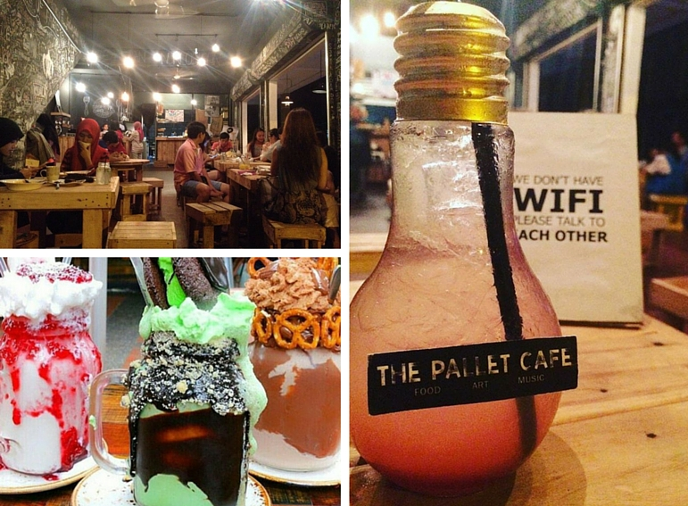
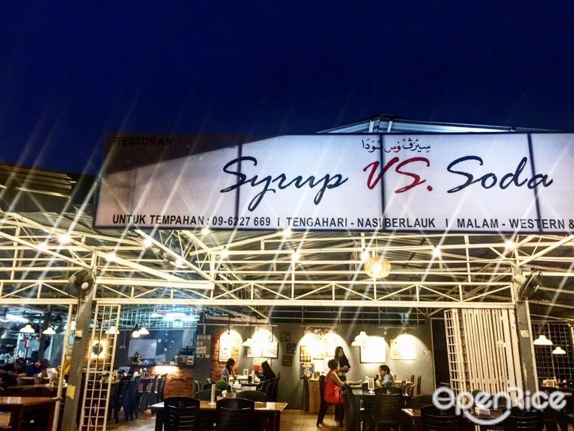

<!DOCTYPE html>
<html>
<head>
	<title>best spot</title>
	<link rel= "stylesheet" href="style.css">
</head>

<html>
<head>
<style> 
body {
  background-image: url("sea.jpg");
  background-color: #cccccc;
  
}

</style>
</head>
</body>
</html>

<body>
<center><h1>Let's Visit Kuala Terengganu</center></h1>

<center>
<font face="algerian" size= "75px" color= "black">'The Best Spot In Kuala Terengganu 
</center></font>
<hr>	
<br>
<center>
<h2>Qawa Cafe</h2>
 
<p>Address: 1482, Jalan Budiman, 20400 Kuala Terengganu
<p>Opening hours: 12pm – 12.30am Thursday to Saturday, 5pm – 2am Friday, Closed during solat hours (7pm – 8pm) 
<p>The kontena concept has really taken off in the past five years as a sustainable (read: quirky) way for business owners to spice up the look of their establishment. This movement was not lost in Terengganu it seems as is shown here in Qawa Coffee. They sell coffee, cakes and sandwiches, and offer indoor and outdoor seating.
<center>
<p>Instagram - Qawa Cafe</p>
<a href="https://www.instagram.com/qawa.coffee/" title="Here the link to my instagram" target="_blank">My Instagram</a>
<hr>
</p>
<hr>
<br>


<center>
<h2>Mek Awang Cafe'</h2>

<p>Address: 139, Jalan Kampung Cina, Kuala Terengganu
<p>Opening hours: 10am – 10pm
<center>
<p>Call them:</p>
<a href="tel:096220104" title="Here the link to my whatsapp" target="_blank">Mek Awang Cafe</a>
<center>
<p>Offering a smorgasbord of local Chinese and Malay delights like keropok lekor, nasi hailam, Peranakan Kay Hong, ayam percik, laksam, nasi lemak ayam rempah, and laksa Terengganu, the newly opened café in Chinatown is poised to grow even more popular in the next few months. If you’re hankering for Peranakan food while you’re in Kuala Terengganu, this is the restaurant for you.
</p>
<hr>
<br>

<center>
<h2>Star Anise Cafe'</h2>

<p>Address: 82, Jalan Kampung Cina
<p>Opening hours: 10am – 12.30am
<center>
<p>Call them:</p>
<a href="https://wa.me/60176642368" title="Here the link to my whatsapp" target="_blank">Star Anise Cafe</a>
<center>
<p>Espresso coffee lovers rejoice! Star Anise in Chinatown is one of the few espresso brewers in Kuala Terengganu. And lending from the art-fuelled gentrification of Penang, Star Anise Café sports vibrant doodles outside of its store as well. It was reportedly illustrated by the café’s own creative director. Inside you’ll find a strong mix of Peranakan and modern influences in its design which is echoed by the sale of local souvenirs and snacks on the racks of its walls.
</p>
<hr>
<br>

<center>
<h2>The Palette Cafe'</h2>

<p>Address: 31041 Ground Floor, Taman Sri Permata, Jalan Tok Jembal,
<p>Opening hours: 6pm – 1am
<center>
<p>Call them:</p>
<a href="https://wa.me/600129005263" title="Here the link to my whatsapp" target="_blank">The Palette Cafe</a>
<center>
<p>Conforming to the regular cafés you might find in KL, The Pallet Café employs a generous use of wooden pallets as makeshift furniture and its walls are covered in chalk markings left by its patrons. The menu is a mishmash of local and western delights with most reviews touting their Vietnamese coffee. They've recently started serving drinks in light bulb containers and have added monstrous milkshakes to the menu. Yum! 
</p>
<hr>
<br>

<center>
<h2>The Syrup Vs Soda'</h2>

<p>Address:  Lot 3373, Jalan Batas Baru, Kuala Terengganu
<p>Opening Hours: 12pm – 5pm, 6.30pm – 12am, Closed on Friday
<center>
<p>Call them:</p>
<a href="tel:096227669" title="Here the link to my whatsapp" target="_blank">The Syrup Vs Soda</a>
<p> What this place lacks in terms of its design, it makes up for in the scrumptious-looking food. On the menu you’ll find mostly western fare with a side of those sinfully decadent milkshakes you find at Garage 51. 
With playful names like Milo Raksasa, Rocky Rock Latte, and Tea Dangdut Goyang, The Syrup Vs Soda has the attitude to go with its varied menu.
</p>
<br>


<hr><center>
<a href="index.html" "title="click this button to My Homepage">My Homepage</a>
<a href="about.html" "title="click this button to About">Attraction</a>
<a href="gallery.html" "title="click this button to Best Place to Stay">Best Place to Stay</a>
<a href="food.html" "title="click this button to Foodie">Foodie</a>
<a href="best.html" "title="click this button to The Best Spot">The Best Spot</a>
<a href="contact me.html" "title="click this button to Contact Me">Contact Me</a>
</center>

</body>
</html>
